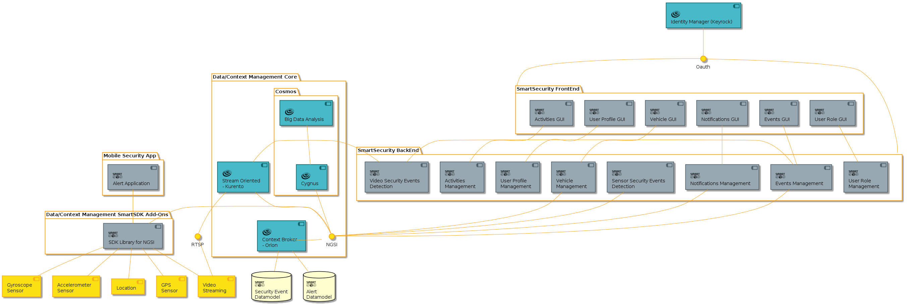

Documentación de la aplicación Smart Security
Requirimientos
La actual versión del sistema tiene los siguientes requerimientos de hardware para pre-procesamiento.
Al menos 32 GB de RAM.
Intel core i7, 3.4 Ghz.
Al menos 500 Gb de hd (1TB recomendado).
Requerimientos de software:
Ubuntu 14.04 LTS
Kurento Media Server 6.1.1
Maven 3.0.5
Java 1.8.0.131
Web2py
OpenCV 2.4
Arquitectura
La arquitectura para la aplicación Smart Security se desarrolla con el fin de detectar eventos de riesgo basado en las adquisición de video desde video cámaras conectadas a una red. El video es analizado para detectar, etiquetar, almacenar y resaltar de manera automática eventos de seguridad relevantes.

Para la gestión del video proveniente de las cámaras utilizamos Kurento, Kurento Media Server (KMS) para ser más exactos. KMS esta basado en Media Elements y Media Pipelines. Los primeros consisten en modulos que llevan a cabo una acción específica reciviendo o enviando streaming. Los segundos, son una cadena de elementos media. Para la aplicación de seguridad hemos desarrollado un conjunto de filtros capaces de detectar objectos (personas y vehículos) en movimiento dentro de una escena, clasificar tales objectos y seguirlos. En una capa siguiente utilizaremos esta información para detectar eventos de seguridad. La información inferidad por los filtros en la fase de procesamiento es enviada al Orion Context Broker (OCB).
Backend de la aplicación Smart Security
El Back End es el gestor del streaming proveniente de las cámaras. El módulo requiere interactuar con la interfaz de usuario con el fin de habilitar o deshabilitar capacidades del sistema, asi como para notificar al usuario los eventos detectados.
De esta forma, la principal contribución de la aplicación se enfoca en el desarrollo de algoritmos para detectar diferentes tipod de eventos visuales. La actual versión del sistema es capaz de detectar movimiento (basada en SubSENSE para deteccón de blobs), personas y vehiculos.
Frontend de la aplicación Smart Security
Con el fin de visualizar toda información generada por el Backend hemos desarrolado una IGU basada en Web2py. Las principales funcionalidades son con respecto a Eventos, Gestion de usuarios, cámaras y configuraciones. La IGU diseñada permite al usuario visualizar el flujo de video y los eventos detectado online. Otra capacidad que esta siendo desarrollada es la de búsqueda que permitira consultar los videos almacenados por el sistema.